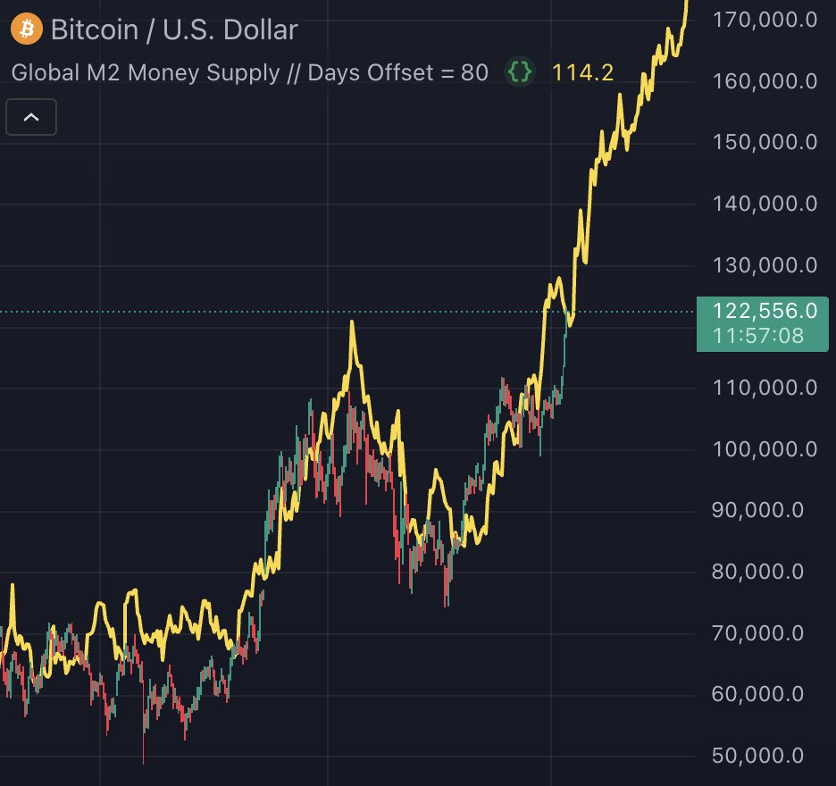
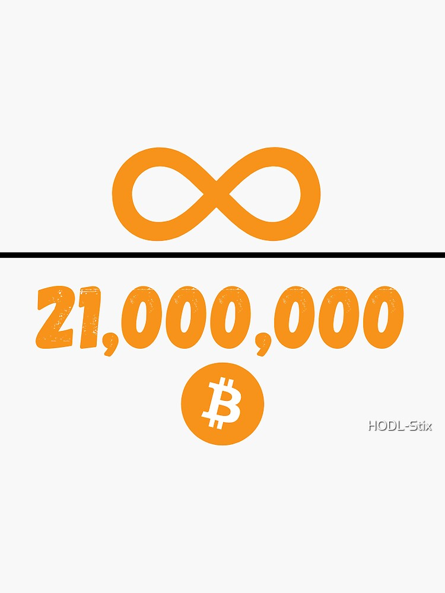

The Satoshi Chronicles
Blog
Browse essays, guides, and quick answers to navigate Bitcoin with clarity.
Start here
Three must-read beginner pieces to build confidence fast.
Bitcoin Explained to a Five-Year-Old
A plain-English mental model for what Bitcoin is and why it matters.
BeginnerBitcoin Questions, Answered
Quick, no-jargon answers to the questions almost everyone starts with.
BeginnerExplain Bitcoin to Anyone (in 2–3 Sentences)
Use-ready scripts for friends, coworkers, and skeptical family members.
Discover articles
Filter by topic to quickly find what you want to read next.
The Biggest Crypto Security Mistakes to Avoid in the Age of AI
The most common mistakes that lead to avoidable crypto losses—and how to prevent them.
AI + MoneyAI Is Eating Software — But Does That Mean It Should Eat Bitcoin?
Why Bitcoin’s moat is physical and social, not just code.
MoneyWhy Bitcoin Changes the Housing Market
How weak money turns homes into savings vehicles—and what fixes it.
MiningWhy Bitcoin Using Energy Is a Feature, Not a Bug
A practical defense of proof-of-work and energy-backed security.
StrategyHow Much Should You Invest?
A framework for sizing conviction without reckless risk.
Beginner + MoneyBitcoin is the New Savings Account
Why saving in dollars keeps getting harder over time.
StrategyThe Store of Value Wars
A side-by-side comparison of Bitcoin, real estate, stocks, bonds, and gold.
ToolsIs now a good time to buy Bitcoin?
A quick interactive check for long-term buyers.
BeginnerBitcoin Questions, Answered
Clear answers to common doubts in one place.
BeginnerBitcoin Explained to a Five-Year-Old
A memorable story that makes money and Bitcoin easy to explain.
MoneySTRC: The Yield Engine
How a yield vehicle could bring more conservative capital toward Bitcoin.
AIWhat Money Will AI Use?
Why stablecoins and Bitcoin may split spending and saving roles.
AI + SecurityWhy Advanced AI Could Make Bitcoin More Secure, Not Less
How stronger AI tooling may harden Bitcoin faster than it helps attackers.
The Biggest Crypto Security Mistakes to Avoid in the Age of AI
Crypto security is getting harder.
Not because Bitcoin is broken.
Not because the blockchain suddenly stopped being secure.
But because AI is making scams, phishing, hacking, and exploit discovery better than ever.
Attackers can now create more believable emails, smarter fake websites, more convincing messages, and better ways to trick people into giving up access to their money.
That means the biggest risk for most people is not Bitcoin getting hacked.
The biggest risk is you making one bad mistake.
Here are the biggest crypto security mistakes people make today, and how to avoid them.
1. Leaving too much crypto on an exchange
A lot of people buy Bitcoin or Ethereum and just leave it sitting on an exchange.
That is easy. It is convenient. It also means you are trusting a third party to protect your money.
If the exchange gets hacked, freezes withdrawals, or your account gets compromised, your crypto can be at risk.
How to avoid it
If you plan to hold crypto long term, move it to self-custody.
A hardware wallet is still one of the best ways to protect serious holdings.
Use exchanges for buying, selling, and moving funds.
Do not treat them like your permanent vault.
2. Storing your seed phrase on your phone or computer
This is one of the worst mistakes a crypto holder can make.
If your seed phrase is stored in your notes app, screenshots, email, Google Drive, iCloud, Dropbox, or computer files, it is not truly secure.
In the age of AI, attackers will get even better at finding weak points in personal devices, cloud storage, and online accounts.
If someone gets your seed phrase, they get your crypto.
How to avoid it
Keep your seed phrase offline.
Do not store it in:
- screenshots
- notes apps
- email drafts
- cloud storage
- text files
- password managers
Write it down and store it securely offline.
3. Trusting links, messages, and emails that look real
This is where AI is going to become incredibly dangerous.
Fake exchange emails will look more convincing.
Fake wallet websites will look cleaner.
Fake customer support messages will sound more human.
Fake urgency will feel more real.
A lot of people are not going to lose crypto because of some Hollywood-style hack.
They are going to lose it because they trusted something that looked legitimate.
How to avoid it
Never click crypto-related links from:
- DMs
- text messages
- random emails
- social media replies
- sponsored search results
Type the website in yourself or use your own bookmark.
If something feels urgent, slow down.
Urgency is one of the biggest red flags in crypto.
4. Using one wallet for everything
Some people keep their whole stack in one wallet and then use that same wallet for swaps, mints, DeFi apps, random websites, and experiments.
That is a mistake.
All it takes is one bad approval, one malicious smart contract, or one fake site to create a huge problem.
How to avoid it
Use separate wallets.
Have one wallet for long-term storage.
Have another wallet for spending, testing, trading, or interacting with apps.
Your cold storage wallet should stay boring.
That is the point.
5. Signing transactions you do not understand
This is one of the biggest modern crypto risks.
A scammer does not always need your seed phrase.
Sometimes they just need you to approve the wrong transaction.
If you sign something malicious, you may be handing over access without realizing it.
How to avoid it
Before you sign anything, stop and ask:
What is this wallet approval actually allowing?
If you do not understand it, do not sign it.
That one habit can save you from a lot of damage.
6. Having weak email and exchange security
A lot of people think crypto security starts and ends with the wallet.
It does not.
Your email account is a huge part of your security.
Your exchange login is a huge part of your security.
If someone gets into your email, they may be able to reset accounts, intercept alerts, or get access to financial platforms tied to your identity.
How to avoid it
Use:
- strong unique passwords
- two-factor authentication
- a secure email account
- extra caution with account recovery methods
Your email should be treated like part of your crypto vault.
7. Thinking you are too smart to get tricked
This one gets people all the time.
Most people who lose crypto did not think they were reckless.
They thought they were being careful.
AI is going to make scams more personalized, more polished, and more believable.
That means confidence is not enough.
How to avoid it
Build a system that protects you even when you are:
- tired
- distracted
- rushed
- emotional
Good security is not about being perfect.
It is about making fewer costly mistakes.
The simple crypto security checklist
If you want to keep this simple, focus on these rules:
- keep long-term holdings in cold storage
- keep your seed phrase offline
- never trust random links
- use separate wallets
- do not sign what you do not understand
- protect your email and exchange accounts
- slow down when something feels urgent
Final thought
Bitcoin is not the weak point.
In most cases, the weak point is human behavior.
And in the age of AI, attackers are going to focus more than ever on exploiting human mistakes.
The people who stay safest will not be the ones who know the most technical jargon.
They will be the ones who build simple habits, follow them consistently, and avoid giving attackers an easy opening.
Back to topAI Is Eating Software — But Does That Mean It Should Eat Bitcoin?
Over the past few years, Bitcoin has traded with an unusually strong correlation to software and technology stocks. At times, the relationship has approached 0.8+, effectively turning Bitcoin into a high-beta proxy for innovation risk in the eyes of the market.
At the same time, artificial intelligence has begun to radically disrupt the software industry itself. AI can now write code, refactor legacy systems, perform cybersecurity analysis, and automate tasks that once required large teams of engineers. As a result, investors are increasingly questioning whether software businesses truly have durable moats.
This raises an important — and increasingly common — question:
If AI is eating software, and Bitcoin is software, shouldn’t AI eat Bitcoin too?
The answer is no. And believing otherwise requires a fundamental misunderstanding of what Bitcoin actually is.
Why Investors Are Right to Worry About Software
Let’s start with what the market is getting right.
For decades, many software companies relied on moats built around:
- Engineering talent
- Speed of iteration
- Feature complexity
- Proprietary code
AI directly attacks all four.
When code can be written, reviewed, and optimized at near-zero marginal cost, the competitive advantage of “we build software better” collapses. Entire categories of SaaS products are being commoditized in real time. Margins compress. Differentiation erodes. Moats shrink.
So the instinct to de-rate software is not irrational.
The mistake is assuming Bitcoin belongs in the same category.
The Category Error: Bitcoin Is Not “Just Software”
Bitcoin uses software.
But Bitcoin is not secured by software alone.
This distinction matters more in an AI-driven world than it ever has before.
Here’s the clearest way to see it:
AI Can Copy Code. AI Cannot Copy This.
AI can:
- Read Bitcoin’s source code
- Replicate it perfectly
- Propose optimizations
- Simulate alternatives
- Even design entirely new protocols
But AI cannot copy:
- $100+ billion in sunk mining infrastructure
- Millions of ASICs deployed globally
- Gigawatts of real, paid-for electricity
- Geographic decentralization across hostile jurisdictions
- A 15-year, adversarially tested security history
- A trillion-dollar liquidity network
- Final settlement with no counterparty
- Social consensus hardened through repeated attacks and forks
Bitcoin’s moat is not informational.
It is physical, economic, and social.
AI can replicate information for free.
Bitcoin’s security is paid for in energy, hardware, capital, and time.
If Bitcoin were merely software, it would already be dead.
Why AI Actually Makes Bitcoin More Secure
A common fear is that smarter AI could somehow undermine Bitcoin by exploiting its open-source nature. In reality, the opposite is far more likely.
AI cannot:
- Push code to Bitcoin
- Force protocol changes
- Override consensus rules
- Introduce silent inflation
- Bypass proof-of-work
What AI can do is strengthen Bitcoin’s defenses:
- Audit code more thoroughly
- Discover bugs faster
- Simulate attack vectors at scale
- Improve wallet security and key management
- Stress-test incentive structures
Bitcoin is intentionally conservative. Changes require human review, broad social consensus, and time. There is no CEO to deceive, no deployment pipeline to hijack, and no “push to production” button.
In a system designed around adversarial scrutiny, smarter defenders help more than smarter attackers.
AI improves Bitcoin’s immune system — without gaining control of its brain.
Could AI Create a “Better Bitcoin”?
Another concern often follows:
What if AI designs a superior version of Bitcoin with better monetary properties?
AI could certainly design a better spreadsheet.
It cannot design better money.
The most important monetary properties are not features that can be optimized in a vacuum. They are outcomes that emerge from history, restraint, and coordination.
Bitcoin already has:
- A fixed, credibly enforced supply
- Decentralization without a controlling entity
- Security backed by real-world energy expenditure
- Global liquidity and settlement credibility
- A Schelling point for digital value
You only get one chance at a fair launch.
You cannot retroactively recreate decentralization.
You cannot shortcut 15 years of adversarial testing.
You cannot fake social consensus.
Any “new Bitcoin” — no matter how elegant its design — starts at zero:
- Zero hashrate
- Zero credibility
- Zero resistance to capture
Money does not reward novelty.
It rewards survival.
Why the Bitcoin–Tech Correlation Exists — and Why It Breaks
Today, Bitcoin is still widely treated as:
- A risk-on asset
- A tech proxy
- A piece of software with a growth multiple
That misclassification explains the strong correlation with software stocks.
But correlations break when fundamentals diverge.
AI compresses the value of purely digital moats.
Bitcoin’s moat exists precisely because it cannot be digitized.
As the market begins to distinguish between software that relies on intelligence and systems that rely on cost, coordination, and physics, Bitcoin stops behaving like a software stock — and starts behaving like what it actually is.
The Bottom Line
AI is eating software because software is easy to replicate.
Bitcoin survives because it is expensive to replicate.
AI does not threaten Bitcoin’s security.
It exposes how rare systems like Bitcoin truly are.
Bitcoin isn’t competing on intelligence.
It’s competing on reality.
And in a world where everything digital becomes cheap, that distinction matters more than ever
Why Bitcoin Changes the Housing Market
Most people are taught that buying a house is one of the best investments you can make.
“Real estate always goes up.”
“Land is scarce.”
“Housing is the safest place to store wealth.”
But very few people stop to ask why housing became an investment in the first place.
The answer has much less to do with homes—and much more to do with money.
This article explains, in simple terms, why:
- Housing prices keep rising
- Real estate became a store of value
- Bitcoin changes that equation
- And why, over the long run, strong money leads to cheaper housing
⸻
1. What money is supposed to do (in simple terms)
Money has three main jobs:
- Medium of exchange – something we use to trade with
- Unit of account – something we price things in
- Store of value – something that holds purchasing power over time
The third job—store of value—is the most important for this discussion.
A good store of value means:
- You can save today
- And buy roughly the same amount (or more) in the future
If money fails at this job, people are forced to find other things to store their wealth in.
⸻
2. Why modern money is bad at storing value
Today’s money is fiat money, which means:
- It is created by governments and central banks
- There is no fixed supply
- More can always be printed
When more money is created:
- Each existing dollar buys less
- Prices rise over time
- Savings lose purchasing power
This is what we call inflation, but at its core it simply means:
Money becomes less valuable the longer you hold it.
Because of this, people don’t want to save in cash.
So they ask a different question:
“What can I put my money into that won’t lose value?”
⸻
3. Why people turned houses into investments
When money stopped working as a store of value, people looked for harder things—things that were harder to create than money itself.
Real estate became one of the most popular choices.
Why?
- You can’t instantly create land
- Houses take time and effort to build
- Property feels tangible and “real”
- It historically rises faster than inflation
So homes slowly stopped being just places to live and started becoming:
- Savings accounts
- Retirement plans
- Wealth storage vehicles
This is a crucial point:
Housing prices didn’t explode because homes became better.
They exploded because money became worse.
⸻
4. The hidden cost of using homes as savings
Using real estate as a store of value comes with serious downsides:
- Homes physically wear down
Roofs, plumbing, appliances—all decay over time. - They are expensive to hold
Property taxes, insurance, maintenance, repairs. - They are illiquid
You can’t sell a bedroom if you need cash. - They are tied to governments and rules
Zoning laws, rent control, taxes, regulations.
Yet people accept these costs because the alternative—holding cash—is worse.
That’s not a sign real estate is great money.
It’s a sign that money is broken.
⸻
5. Bitcoin introduces something new: strong money
Bitcoin is different because it fixes the store-of-value problem at the money level.
Here’s what makes Bitcoin unique, in plain language:
- Fixed supply
There will only ever be 21 million Bitcoin. No one can change that. - No physical decay
Bitcoin doesn’t rot, rust, or wear out. - No property taxes or maintenance
You don’t pay yearly costs just to hold it. - Easy to move and divide
You can send any amount, anywhere, at any time. - Harder than real estate
We can build more houses.
We cannot create more Bitcoin.
Bitcoin is not just an investment—it is a better form of money.
⸻
6. What happens when money is harder than houses
This is the key shift.
For most of modern history:
- Money was easy to create
- Houses were hard to create
So wealth flowed into houses.
Bitcoin flips that relationship:
- Bitcoin is extremely hard to create
- Houses are comparatively easy to create
When that happens, wealth flows into money instead.
This doesn’t mean everyone sells their home.
It means:
- Investors no longer need homes to protect their savings
- Fewer people buy houses just to store wealth
- The extra “investment demand” for housing slowly fades
Markets are set at the margin.
You don’t need everyone to change—just the next buyer.
⸻
7. The idea of “monetary premium” (explained simply)
Today, a home’s price includes two parts:
- Use value – shelter, location, comfort
- Monetary premium – people bidding it up as a place to store money
Bitcoin competes only for the second part.
As people store value in Bitcoin instead of property:
- The monetary premium shrinks
- Prices become more tied to wages and rents
- Homes stop rising endlessly in price
This is how housing becomes more affordable—without destroying housing itself.
⸻
8. A simple thought experiment
Imagine a world with perfect money.
- You can’t print more of it
- It gains value over time
- Saving is rewarded
In that world:
- You wouldn’t need a house as an investment
- You’d buy a house because you want to live there
- Better homes would become cheaper over time
- Just like TVs, computers, and phones
Housing only became “an investment” because money failed.
Bitcoin gives us the first real alternative.
⸻
9. Why this change happens slowly (and realistically)
This is not an overnight revolution.
- People won’t abandon real estate
- Homes still provide shelter
- Some investors will always want rental income
But even small shifts matter.
If investors allocate 10–20% of what would have gone into property into Bitcoin instead:
- Less pressure on housing prices
- Fewer bidding wars
- More supply available for people who actually want to live there
That’s how systems change—gradually, then suddenly.
⸻
10. The bigger picture
Bitcoin isn’t about getting rich quick.
It’s about restoring something we lost:
- Money that actually works
- Savings that don’t decay
- An economy where productivity makes life cheaper, not more expensive
In a world with strong money:
- Homes are homes again
- Savings are savings again
- And wealth doesn’t need to hide inside walls and roofs
Bitcoin doesn’t destroy housing.
It frees housing from having to be money.
Back to topWhy Bitcoin Using Energy Is a Feature, Not a Bug
⸻
Introduction: the energy narrative is backward
For many people, their entire view of Bitcoin mining begins and ends with one sentence:
“Bitcoin uses a lot of energy.”
From there, the conclusion feels obvious—it must be bad. Wasteful. Environmentally destructive. A technological mistake.
But this framing skips the most important question entirely:
What is that energy actually doing?
Energy use alone tells us nothing. Civilization itself is the story of converting energy into coordination, security, and prosperity. Roads, hospitals, food systems, the internet, and the global banking system all exist because energy is continuously consumed to maintain them.
Bitcoin is no different—except that its energy use is explicit, measurable, and voluntary, rather than hidden behind inflation, taxation, or institutional opacity.
⸻
1. Why Bitcoin must be tied to energy at all
Bitcoin is secured by Proof-of-Work, a system that deliberately anchors digital value to physical reality.
In traditional systems, ownership is enforced by:
- Governments
- Courts
- Police
- Militaries
- Financial intermediaries
These systems all require energy—massive amounts of it—but the costs are externalized and hidden.
Bitcoin internalizes those costs.
To alter Bitcoin’s ledger, an attacker must expend:
- Real capital
- Real hardware
- Real electricity
- Continuously, not just once
This makes fraud and censorship physically expensive, not just logically prohibited.
Energy is not an accident here.
It is the mechanism that makes Bitcoin:
- Neutral
- Permissionless
- Resistant to political capture
- Credible as long-term property
Without energy, Bitcoin would simply be another database controlled by administrators.
⸻
2. How much energy does Bitcoin mining actually use?
Bitcoin’s energy use is often discussed vaguely, but credible estimates exist.
The Cambridge Centre for Alternative Finance maintains the Cambridge Bitcoin Electricity Consumption Index (CBECI), the most widely cited independent model.
Recent estimates place global Bitcoin mining electricity usage roughly in the range of:
- ~120–170 terawatt-hours (TWh) per year, depending on assumptions and network conditions
That is not trivial—but it is also not uniquely large in a world that consumes over 180,000 TWh annually.
The key insight is not the absolute number.
It’s what kind of energy Bitcoin uses and how it responds to price signals.
⸻
3. Mining is economically self-regulating by design
Bitcoin mining is one of the most competitive industries on earth. That competition creates powerful incentives.
Energy price discipline
Electricity is the dominant operating cost.
If power is expensive, miners lose money and shut down.
This forces mining toward:
- Abundant energy
- Underutilized energy
- Otherwise wasted energy
Mining does not thrive where energy is scarce or needed most by households—it thrives where energy has no better buyer.
Location-dependent and location-independent
This combination is unique.
- Location-dependent: miners must go where energy is cheapest.
- Location-independent: mined hashes can be produced anywhere with an internet connection.
That allows Bitcoin to monetize energy that cannot easily be transported, such as remote hydro, curtailed wind, or stranded gas.
⸻
4. Bitcoin miners as buyers of last resort
Many power grids face a structural mismatch:
- Generation is built for peak demand
- Actual demand fluctuates constantly
- Excess energy is often curtailed or wasted
Bitcoin miners solve this by acting as buyers of last resort.
Underutilized grids
In regions with excess capacity:
- Mining provides immediate baseline demand
- Improves the economics of power infrastructure
- Encourages further grid investment
Overloaded grids
When grids are stressed:
- Electricity prices spike
- Mining becomes unprofitable
- Miners shut off automatically
This behavior has been observed in markets like Texas, where miners participate in demand-response programs coordinated with ERCOT.
Mining is not rigid load—it is price-responsive load, which modern grids desperately need.
⸻
5. Flare gas and methane mitigation
One of the strongest environmental use cases for Bitcoin mining involves methane, a greenhouse gas far more potent than CO₂ over short time horizons.
The problem
Oil and gas operations frequently produce methane that:
- Cannot be economically transported
- Is flared or vented on site
- Contributes significantly to emissions
The Bitcoin mining solution
Portable mining units can:
- Be deployed directly at flare sites
- Convert methane into electricity
- Use that electricity to secure the Bitcoin network
Multiple studies show that combusting methane for power generation is materially better than venting it, and in many cases better than inefficient flaring.
Bitcoin mining creates economic incentive to mitigate methane that would otherwise be wasted.
Few industries can turn an environmental liability into a monetizable improvement.
⸻
6. Renewable energy and Bitcoin mining are structurally aligned
Bitcoin mining does not need to be “green by intention” to trend green by economics.
Renewable energy sources tend to have:
- High upfront capital costs
- Very low marginal costs
- Intermittent output
Bitcoin mining:
- Can turn on and off instantly
- Can operate in remote locations
- Does not require proximity to population centers
This makes mining a natural complement to:
- Wind farms with curtailment
- Solar farms with midday oversupply
- Hydroelectric plants with seasonal excess
According to survey-based research from Cambridge, a majority of Bitcoin mining electricity now comes from sustainable sources, including renewables and nuclear, with coal usage declining sharply.
This is not ideology—it is cost minimization at work.
⸻
7. “But it uses more energy than Christmas lights and dryers”
This comparison often circulates in oversimplified form, and it deserves clarity.
Household activities like:
- Decorative holiday lighting
- Clothes dryers
- Always-on consumer electronics
Collectively consume tens of terawatt-hours per year in the United States alone.
Bitcoin’s energy use is comparable in scale, but the more important comparison is not raw consumption—it is value per unit of energy.
Society does not question energy spent on:
- Entertainment
- Convenience
- Inefficiency
Bitcoin’s energy expenditure secures:
- A global, censorship-resistant monetary system
- Immutable digital property rights
- A settlement network independent of political authority
The question is not whether Bitcoin uses energy.
The question is whether this outcome is worth the energy it consumes.
⸻
8. Energy, property rights, and inflation
For billions of people, inflation is not a theoretical concern.
Currency debasement, capital controls, and confiscation are lived realities.
Bitcoin offers:
- A fixed monetary supply
- Ownership without permission
- Settlement without intermediaries
Historically, property rights have always required energy to enforce:
- Armies
- Courts
- Police
- Bureaucracies
- Financial institutions
Bitcoin replaces coercive enforcement with economic enforcement.
Instead of trusting institutions, users trust math, cryptography, and energy.
⸻
9. Bitcoin internalizes its security costs
This is a crucial and often overlooked point.
Traditional monetary systems:
- Externalize security costs
- Fund enforcement through inflation, taxation, and debt
- Hide the true cost of monetary control
Bitcoin does the opposite.
Its security cost:
- Is transparent
- Is voluntary
- Is paid by those who value the system
There is no pretense that security is free.
That honesty alone makes Bitcoin fundamentally different.
⸻
Conclusion: energy is the point
Bitcoin does not use energy because it is inefficient.
It uses energy because anything that resists corruption must be expensive to corrupt.
Bitcoin turns energy into:
- Monetary integrity
- Property rights
- Global neutrality
In a world where energy is already spent enforcing far less transparent systems, Bitcoin’s tradeoff is not only reasonable—it is elegant.
The real question is not whether Bitcoin uses energy.
The real question is whether securing human monetary freedom is worth it.
For millions of people already using Bitcoin to escape inflation and censorship, the answer is clear.
Back to topRoll or Die You Bet I'm a Rider - A Guide To How I Think About How Much To Invest
Imagine You're flipping a coin; heads or tails. Each has a 50% outcome. If you bet $1, you can win double your money, $2. If you lose, you lose your dollar. If the odds are 50% and your winnings are double, this is ultimately a pointless game to be played. Over enough time, you'll just break even.
What if we flipped a coin, but now instead you win 10x your money if heads, and still lose whatever you gambled with? The odds are still 50%, however, your return on one side is much greater. Let's play it out for 10 flips, what would happen with $1 each flip:
- Tails: -$1
- Heads: +$10
- Tails: -$1
- Heads: +$10
- Tails: -$1
- Heads: +$10
- Tails: -$1
- Heads: +$10
- Tails: -$1
- Heads: +$10
You won $50, and lost $5. Your total winnings are $45. Your average return per coin toss are 4.5 times your initial investment! This type of game should be played very often if it existed.
Now the question is how much should someone bet to play this game? Should you bet everything you have? Go into debt for it? Remember, although the returns are positive per flip, there's still a 50% chance you lose everything. No matter how amazing the returns are, risking everything I would consider to be dangerous and not worth playing the game.
On the other side, there is most certainly too small a number. If you're a millionaire and you were offered this opportunity, betting only $10 is simply just not worth it. This is cowardly, and not taking advantage of the amazing situation at hand.
This is an age old question that investors have to think about. There are many variables to a game like this, and everyone has their own risk tolerance. Everyone has different comfort levels, but it is good to establish in your mind what is too much and what is too little. Something that effectively splits the difference of "don't be a bitch" and "don't lose it all" is probably that place.
Now, I personally consider Bitcoin to be flipping a coin that lands on heads 90% of the time that has at minimum 10x returns in its relatively longer term future. These odds are purely subjective on my part, but they are based on my understanding of Bitcoin and the chances that I see it succeeding.
It also isn't decided instantly, it's a game whose odds change slightly every day so you can always reevaluate at any time.
But, if you are a serious investor, throwing $100 at this isn't correct. Investing all your life's savings, mortgage and bill money when you have a family and you can't handle the day to day volatility isn't right either. But, there is a right number for you, where you can play this game in a way that will change your life and not damage it either.
Back to topBitcoin is the New Savings Account
Often, you will hear people are told they need to invest their money in order for it to grow. Why is that? It's because saving in dollars or any other government currency is DESIGNED to lose value over time.
The way it loses value is very insidious. The total amount of dollars you have remain the same, but how much everything around you costs seems to be going up. So if you had $10,000 dollars in 2020 that you could put towards a home and now homes are up 50%, that 10,000 is now only buying you $5,000 worth of that same home.
Why doesn't the government stop this? Why don't they guarantee the value of the dollar remains the same over time? Well, that would mean they can't inflate the money supply by creating dollars out of thin air to pay for their spending. Sorry, but funding everything the government wants matters more to them. Social security, health care, public services, military spending, this is the cost to have these things!
Currently, the government owes 37 trillion dollars that must be paid out to fund all these different things. With this comes interest, and the interest payments are so large that they consume a significant portion of the budget, leaving less for other important services.
Imagine you make 45,000 per year, yet you spend $60,000 per year. And you keep borrowing more money to cover the difference. Eventually, you reach a point where your debt is so high that you can't keep up with the payments. This is exactly what is happening to the U.S. government.
So, do you want to be on the hook and pay the consequences for someone whose financial decisions have led to this situation? Because you no longer have to! Enter Bitcoin.
Bitcoin has no debt. It's structurally designed to just exist without the need for borrowing or creating money out of thin air. There literally is no ability to create more Bitcoin. In comparison, the M2 Global Money Supply (just a fancy way of saying all how much more money is being created out of thin air in totality around the world) continues to increase for ever and ever at accelerating rates. That just means they keep making their currency worth less and less in that insidious way I mentioned earlier.

Imagine Bitcoin is in equal footing on all the different properties that make it money as the dollar in every other aspect. Why on earth would you choose to save your wealth in the dollar that inflates forever versus the one that cannot inflate no matter what? This is why the Bitcoin price keeps going up!
This is becoming obvious now. Just a few years ago, people felt like Bitcoin was just a strange digital curiosity. Now, it's clear that it's a legitimate alternative to traditional currencies.
My call to action: Start thinking about your savings differently. Go learn about Bitcoin on your own and if you find out what I am saying is true, decide to hold some of your savings in Bitcoin instead of all in dollars. As times goes by and your confidence and understanding grows, so does the percentage of money you hold in Bitcoin relative to dollars.
Back to topThe Store of Value Wars: One Asset to Rule Them All
Money really only has two jobs: move value through space and keep value through time. We all grasp the first job because sending money is part of daily life. The second job—preserving purchasing power—is where the hidden damage happens. You can still hold the same stack of dollars, yet every item you want costs more because the supply of dollars keeps expanding.
When prices rise, it is tempting to blame the coffee shop, the landlord, or the hospital. Competition keeps most businesses from gouging, though; the real culprit is that the money supply grows, so each dollar buys less. Imagine a town with $10 per person and apples priced at $1. If the money supply doubles, each person now has $20, and apples become $2 to keep the same share of purchasing power. The seller is not suddenly greedy—the money just became worth less.
Here is the kicker: if no one could create more money, prices would naturally fall over time as technology makes producing and delivering goods cheaper. Better tools, richer soil, autonomous transport—each innovation lowers costs. In a fixed-supply money world, those efficiency gains flow to everyone as lower prices.
The wealthy already know this game. They avoid holding cash by buying assets: gold, commodities, bonds, stocks, real estate, and increasingly Bitcoin. Every asset comes with trade-offs: volatility, exposure to management decisions, liquidity limits, or reliance on market hours. The question is whether one asset best fulfills the goal of maintaining and growing value through time.
Designing the perfect store of value
To protect value across time, an asset needs a few core qualities:
- Fixed supply: New units cannot be created at will. Bitcoin caps out at 21 million, enforced by its decentralized network. Gold supply grows every year, and new shares or new dollars can be issued whenever issuers decide.
- User control: Holders must be able to custody and secure the asset themselves. Bitcoin allows self-custody with a phone or hardware wallet; stocks sit on exchanges that can gate access, and large amounts of gold are cumbersome to secure.
- Always-on liquidity: You should be able to use or sell it anytime. Real estate can take months to sell, and stocks trade only during market hours. Bitcoin trades 24/7/365 globally.
Across the world, assets compete to be the preferred vault for wealth: real estate and bonds sit in the hundreds of trillions, equities hover around a hundred trillion, and gold commands tens of trillions. Bitcoin, the contender purpose-built as digital property with a hard cap, is still under two trillion.
Markets are Darwinian. Over time, the assets with the strongest store-of-value traits rise to the top. If Bitcoin truly is the superior option, the flow of wealth toward it is only beginning. Those who recognize and act on that reality early are best positioned to benefit.
Back to topIs now a good time to buy Bitcoin?

On longer time frames, buying Bitcoin will likely always beat the dollar. Short term, anything is possible, but the correct approach to be successful in Bitcoin is to have a lot of patience and to invest money you have saved up, not bill money.
Back to topThe OFFICIAL “Is this is a dumb question” Q&A for Bitcoin
This is your safe place to ask the “obvious” Bitcoin questions. Every answer below is written to be direct, plain English, and free of jargon so you can build confidence in your understanding step by step.
Is Bitcoin a scam?
No, Bitcoin is not a scam. For decades, computer programmers have been trying to create a money that uses cryptography to secure it. The idea is if a currency can be created that no one can steal or control, a better system of money can exist. Bitcoin was the first successful one because Satoshi, the creator of Bitcoin, solved a famous computer science challenge called the Byzantine Generals Problem—how to get computers that do not trust each other to agree on the same truth.
Can I only buy a whole Bitcoin?
Fortunately, you can buy any amount of Bitcoin you want. You can own tiny fractions. If Bitcoin is $100,000, you could buy $100 worth, $10 worth, or even just a few cents worth and still participate.
Where can I buy Bitcoin?
You can buy Bitcoin on exchanges, where you trade your local currency for Bitcoin. Some of the most popular ones are Coinbase, Gemini, and Binance.
Why should I buy Bitcoin?
The shortest and simplest answer: Bitcoin is likely to become more valuable over time, while the currency you use today (dollars, euros, pesos, etc.) will likely buy less over time.
Why is this?
Money has certain properties—it should be scarce, secure, and easy to send and receive. Bitcoin is stronger than traditional currencies in each of these areas, so more people are choosing it for long-term savings.
Isn’t Bitcoin volatile?
Yes, Bitcoin is volatile. The price can swing significantly in a short time. Because of this, invest with a plan. Ask yourself, “If the price drops a lot tomorrow, will I still be okay?” If the answer is no, invest a smaller amount that lets you stay calm and patient for the long term.
What if I want to sell?
The same exchange that lets you buy Bitcoin will let you sell it back into your local currency when you decide to.
When should I sell?
Ask yourself: when will the money you are switching back into be better than Bitcoin? If you believe Bitcoin still offers stronger money properties, selling may not make sense yet.
When should I buy?
If the money you are currently using is not serving you as well as Bitcoin can, consider buying Bitcoin as soon as possible so that more of your savings live in the better form of money.
I understand Bitcoin is better, but I still want to take some profit.
It is your money and your Bitcoin, so always do what is best for you. Just know that selling for no clear reason is often met with regret later. Bitcoin has produced the greatest returns of any asset in history, and those who benefited most decided Bitcoin was their primary long-term money.
Keep asking questions, keep learning, and move at the pace that lets you sleep well at night.
Back to topBitcoin Explained to a Five-Year-Old
Imagine there’s a big notebook 📓 that everyone in the world can see.
Every time someone gives someone else a dollar, a line gets written in the notebook saying:
“Alex gave Jamie $5.”
Now here’s the important part:
- No one owns the notebook
- No one can erase lines
- Everyone checks that the lines are honest
That notebook is called Bitcoin.
⸻
Why Do We Need It?
Right now, when grown-ups send money, they use banks.
Banks are like:
- Teachers who keep score
- But they can change the score
- And sometimes they don’t let you play
Bitcoin is different.
With Bitcoin:
- You hold your own money
- No one can take it away
- No one can make more behind your back
It’s like having your own piggy bank that no one else can open 🐷
⸻
Where Do Bitcoins Come From?
Bitcoins are made by computers playing a very hard guessing game.
When a computer wins:
- It gets a little Bitcoin
- It helps keep the notebook safe
The game is hard on purpose so:
- Not too many Bitcoins are made
- No one can cheat
There will only ever be 21 million Bitcoins.
That’s it. Forever.
⸻
Why Is That Important?
Imagine if your teacher could:
- Print more gold stars whenever they wanted
- And give them to their friends
Then your gold stars wouldn’t feel special anymore.
That’s what happens with regular money.
Bitcoin doesn’t work like that:
- The rules can’t change
- No one gets special treatment
- Everyone plays by the same rules
⸻
Is Bitcoin Real?
You can’t touch Bitcoin.
But you also can’t touch:
- The internet
- A video game score
- A text message
They’re still real because people agree they’re real.
Bitcoin is real because:
- Millions of people use it
- Computers protect it
- Math makes the rules
⸻
What Is Bitcoin Really?
Bitcoin is:
- Money that doesn’t need a boss
- A notebook that never lies
- A promise that rules matter
Or, in five-year-old terms:
Bitcoin is fair money that no one can cheat.
Back to topSTRC: The Yield Engine That Could Help Send Bitcoin Much Higher
There are moments in investing where a new financial structure doesn’t just offer a better return — it changes the game.
STRC (Stretch), a preferred stock issued by Strategy (formerly MicroStrategy), is one of those moments.
STRC isn’t just another Bitcoin-adjacent product. It’s a high-yield, low-volatility bridge between conservative capital and Bitcoin — and it may end up being one of the most powerful contributors to Bitcoin’s long-term price appreciation.
Let’s break down why.
⸻
What Is STRC, Simply Explained
STRC is a yield-paying preferred stock that currently offers around 11% annualized return, paid monthly in cash.
Key features:
- Trades publicly like a stock
- No lockup period (buy or sell anytime)
- Designed to stay relatively stable in price
- Pays income similar to a bond, but at a much higher rate
This alone makes STRC compelling — but the reason it can exist is what makes it extraordinary.
⸻
Why STRC Beats Traditional “Safe” Investments
Consider the alternatives:
- 1-year U.S. Treasuries: ~3–4%
- Investment-grade bonds: low yield, high inflation risk
- Real estate: 8–12% if you’re skilled, leveraged, illiquid, and hands-on
- S&P 500: ~8–10% expected long-term, but volatile year to year
STRC offers:
- ~11% yield
- Monthly cash payments
- Liquidity
- No tenants, no repairs, no lockups
For anyone looking to park capital and earn income, STRC competes directly with bonds — and wins decisively.
⸻
The Safety Mechanism Most People Miss
A common concern is: “What happens if Bitcoin crashes?”
Here’s the critical detail:
Strategy maintains a dedicated cash reserve specifically to pay STRC dividends — with roughly 20 months of coverage already funded.
That means:
- Short-term Bitcoin volatility does not affect dividend payments
- No forced Bitcoin selling during drawdowns
- STRC income is insulated from near-term market swings
On top of that, Strategy is heavily overcollateralized with Bitcoin. This is not a fragile structure — it’s deliberately engineered to survive volatility.
⸻
The Flywheel That Changes Everything
Here’s where STRC becomes bigger than just a great yield product.
- Investors buy STRC for income
- Strategy uses the capital to buy Bitcoin
- Bitcoin appreciates over time
- Strategy easily covers the 11% payout
- Excess Bitcoin accrues to the balance sheet
- Confidence increases → more capital flows in
This is a positive feedback loop.
The key assumption is simple:
Bitcoin must be worth more in the future.
If you believe that, the entire structure works — and scales.
⸻
Why This Is a Win for Everyone
- STRC holders get stable, high income
- Strategy acquires Bitcoin below its long-term value
- Bitcoin holders benefit from sustained, non-speculative demand
This is one of the rare cases in finance where incentives align across all participants.
As Michael Saylor often argues, if Bitcoin compounds at ~20–30% over long periods, paying out 11% is not a cost — it’s leverage.
⸻
STRC vs Bitcoin ETFs: Not Competitors, Partners
Bitcoin ETFs like iShares Bitcoin Trust bring in massive capital from investors who want pure price exposure.
STRC brings in a completely different kind of money:
- Yield-seeking
- Conservative
- Mandated capital that cannot buy Bitcoin directly
Both funnels point in the same direction: more Bitcoin bought, held, and removed from circulation.
ETFs legitimize Bitcoin.
STRC institutionalizes it.
⸻
Why STRC Could Capture Enormous Capital
The global bond market is over $100 trillion.
If even a small fraction of investors decide:
- “I’d rather earn 11% backed by Bitcoin than 3% in depreciating dollars”
That’s hundreds of billions — potentially trillions — of dollars seeking STRC-like structures.
And every dollar that flows in ultimately becomes Bitcoin demand.
⸻
Final Thought
STRC is not a speculative trade.
It’s a structural shift.
It allows conservative capital to participate in Bitcoin’s upside without volatility, while simultaneously accelerating Bitcoin’s adoption as a global monetary asset.
If you believe Bitcoin will be worth more in the future, STRC is not something to ignore — it’s something to seriously consider as a core, cash-like holding in a Bitcoin-centric portfolio.
Bitcoin doesn’t need everyone to buy it directly.
It just needs systems that work.
STRC is one of those systems.
Back to topWhat Money Will AI Use?
Stablecoins for Spending, Bitcoin for Saving
The next wave of the internet will not just be humans transacting with each other.
It will be machines transacting with machines.
AI agents are already beginning to:
- purchase data
- rent compute power
- pay for API access
- buy digital services
- sell their own outputs
In other words, AI systems are beginning to participate in the economy.
And that raises a fascinating question:
What money will AI use?
Not what money humans want AI to use.
But what money an AI agent would rationally choose when optimizing for efficiency, security, and reliability.
The answer is unlikely to be just one form of money.
Instead, the AI economy will probably adopt a layered monetary system where different assets serve different roles.
And in that system, stablecoins and Bitcoin may each have a very specific purpose.
Why Traditional Money Breaks for AI
Before exploring crypto, it’s important to understand why traditional financial rails are poorly suited for autonomous software.
Most payment systems were designed for humans and banks.
They require things like:
- bank accounts
- identity verification (KYC)
- credit approvals
- business registrations
- geographic jurisdiction
- banking hours
AI agents do not naturally fit into this framework.
Imagine a software agent that wants to pay for:
- one second of GPU compute
- a single dataset query
- a real-time API request
- access to a research database
Traditional banking rails cannot handle this efficiently.
They are:
- slow
- expensive for small transactions
- restricted by borders and regulations
- not easily programmable
AI agents, on the other hand, operate entirely on the internet.
They need money that is:
- programmable
- global
- instant
- machine-readable
This is exactly what cryptocurrency systems were designed for.
The Two Most Likely Types of AI Money
Two forms of digital money currently stand out as strong candidates for the AI economy:
- Stablecoins
- Bitcoin
But they solve very different problems.
When AI Agents Will Prefer Stablecoins
Stablecoins will likely dominate high-frequency transactional payments.
These are digital tokens designed to track the value of traditional currencies, most commonly the U.S. dollar.
Examples include USDC and USDT.
For many AI use cases, stablecoins offer clear advantages.
1. Price Stability for Everyday Transactions
Most digital services are priced in dollars.
Examples might include:
- $0.002 per API request
- $0.10 per gigabyte of data
- $3 per minute of GPU compute
- $15 for a generated report
Stablecoins eliminate price volatility.
An AI system paying operational expenses would prefer predictable pricing where:
$10 today equals $10 tomorrow.
This makes stablecoins ideal for routine economic activity.
2. Micropayments at Internet Scale
AI agents will likely perform millions of small transactions.
For example:
- paying per API call
- streaming payments for compute usage
- paying per kilobyte of bandwidth
- buying real-time data feeds
Modern crypto infrastructure allows:
- low-cost transactions
- near-instant settlement
- automated payments through smart contracts
Stablecoins make it practical for machines to perform continuous micropayments.
3. Compatibility With Traditional Finance
Many businesses will still operate in dollar-based accounting systems.
Stablecoins bridge the gap between:
- traditional finance
- crypto infrastructure
- machine-based commerce
This means companies can integrate AI payments while still maintaining dollar-denominated accounting.
For that reason, stablecoins may become the default transactional currency for AI systems.
When AI Agents Would Choose Bitcoin
Bitcoin solves a different problem entirely.
It is not optimized for fast payments or cheap transactions.
Instead, Bitcoin optimizes for something far more fundamental:
trustless digital ownership.
Bitcoin offers several properties that become extremely valuable under certain circumstances.
1. Long-Term Value Storage
If AI agents or autonomous systems begin generating significant economic value, they will accumulate reserves.
At that point, the question becomes:
Where should that value be stored?
Stablecoins depend on:
- banks
- governments
- centralized issuers
Bitcoin does not.
Bitcoin’s monetary supply is fixed at 21 million coins, enforced by a decentralized network.
For systems optimizing for long-term value preservation, Bitcoin becomes an attractive reserve asset.
In this model:
- Stablecoins become spending money
- Bitcoin becomes savings
2. Neutral Global Settlement
The world’s financial system is fragmented by borders.
Different countries operate under:
- different currencies
- different regulations
- different banking systems
Bitcoin operates on a single global monetary network.
Transactions settle:
- 24 hours a day
- anywhere on earth
- without requiring permission from a bank
For AI agents coordinating economic activity across jurisdictions, Bitcoin offers a neutral settlement layer.
3. Resistance to Financial Censorship
Stablecoins can be frozen.
Issuers maintain blacklists and comply with regulatory restrictions.
That makes stablecoins effective for regulated commerce—but not neutral money.
Bitcoin transactions cannot be frozen by any central issuer.
For AI agents operating in environments where:
- payment restrictions exist
- governments attempt to block transactions
- financial censorship is possible
Bitcoin offers a more resilient payment rail.
4. Minimizing Counterparty Risk
Stablecoins ultimately represent claims on financial institutions.
Bitcoin represents native digital property.
There is no issuer.
There is no bank holding reserves.
There is no central authority controlling the system.
For an AI agent optimizing for minimizing counterparty risk, Bitcoin offers a uniquely trust-minimized form of digital wealth.
The Most Likely Outcome: A Layered AI Monetary System
The future AI economy will probably not run on a single currency.
Instead, it will likely use multiple forms of money simultaneously, each optimized for different purposes.
Transaction Layer
Stablecoins for:
- micropayments
- API calls
- compute usage
- routine machine commerce
Reserve Layer
Bitcoin for:
- long-term reserves
- treasury storage
- censorship-resistant savings
Infrastructure Layer
Blockchain networks enabling:
- automated contracts
- escrow services
- programmable marketplaces
A Simple Analogy
Think of the AI economy like a business.
Businesses already use different financial tools for different purposes.
- Checking accounts for daily expenses
- Savings accounts or bonds for reserves
- investments for long-term growth
The AI economy may follow a similar structure:
Stablecoins = the checking account
Bitcoin = the savings account
Why Crypto and AI Fit Together So Naturally
AI systems operate entirely on the internet.
Traditional money systems were built for banks and governments.
Cryptocurrency systems were built for software and networks.
That makes them uniquely suited for a world where:
machines transact directly with machines.
As autonomous agents begin to participate in the economy, they will naturally gravitate toward monetary systems that are:
- global
- programmable
- open
- permissionless
The most likely future is not that AI chooses a single currency.
It’s that the AI economy adopts a new financial architecture.
And in that architecture:
Stablecoins may power the spending layer of machine commerce.
While Bitcoin may emerge as the ultimate store of value for the digital age.
Back to topWhy Advanced AI Could Make Bitcoin More Secure, Not Less
A lot of people assume more powerful AI models are a threat to Bitcoin.
The thinking is simple: if AI gets better at finding bugs, then it should also get better at helping attackers exploit them.
That is true to a point.
But when it comes to Bitcoin, the bigger story may be the exact opposite:
More advanced AI could actually make Bitcoin safer over time.
The usual fear: AI will help hackers find exploits faster
This is the argument most people make.
If AI becomes extremely good at reviewing code, spotting weak points, and testing attack paths, then eventually it should become easier for bad actors to find vulnerabilities in software systems.
And in many cases, that will probably be true.
A lot of weak software is going to have a hard time in a world where both defenders and attackers have increasingly powerful AI tools.
But Bitcoin is not weak software.
That distinction matters.
Bitcoin is exactly the kind of system that benefits from stronger AI security tools
Bitcoin is one of the most important open-source software projects in the world.
It secures an enormous amount of value. It has been studied for years. It is watched by developers, miners, companies, researchers, and governments. Every serious change gets picked apart from every angle.
That makes Bitcoin one of the best possible candidates to benefit from advanced AI-assisted security reviews.
If a new model can help uncover obscure bugs, strange edge cases, or subtle vulnerabilities, Bitcoin is the kind of project where those discoveries are likely to be taken seriously and dealt with carefully.
In other words, Bitcoin is not just exposed to AI.
Bitcoin is positioned to benefit from AI.
The strongest tools usually reach defenders first
This is the part that many people overlook.
When a brand-new frontier AI model comes out, it usually is not dropped straight into the hands of every random attacker on earth.
In many cases, it is first used internally by the company that built it, then by trusted researchers, cybersecurity teams, large institutions, or carefully selected partners.
That creates a window.
And that window matters.
If the best defenders get access to the strongest tools first, they can start finding and fixing problems before those same capabilities spread more broadly.
So while people focus on the long-term risk of smarter attackers, they often ignore the short-term advantage this gives defenders.
For Bitcoin, that could be a very big deal.
Why this matters more for Bitcoin than for most crypto projects
Not all crypto is created equal.
A lot of crypto projects are rushed, thinly reviewed, overly complex, or built by teams that simply do not have the same level of scrutiny or engineering discipline.
Those projects may become easier to break in an AI-heavy world.
Bitcoin is different.
Bitcoin is conservative.
Bitcoin is battle-tested.
Bitcoin moves slowly on purpose.
Bitcoin has more eyes on it than almost anything else in crypto.
So yes, advanced AI may expose more weaknesses across the software world.
But Bitcoin is one of the systems most likely to have those weaknesses found, understood, and fixed before they become catastrophic.
Open-source software gets stronger when review tools improve
Some people hear “open source” and think “easy target.”
That misses the point.
Open-source code can be inspected by anyone. That means bugs are not hidden behind corporate walls. They can be examined, challenged, and improved in public.
Now combine that with increasingly powerful AI tools.
Instead of relying only on human reviewers, Bitcoin can benefit from human experts using AI to scan large codebases, test assumptions, explore weird edge cases, and catch subtle issues faster than ever before.
That is not a weakness.
That is a serious advantage.
Open source plus elite human review plus powerful AI may become one of the strongest security combinations in the world.
This does not mean Bitcoin is risk-free
None of this means AI is all upside.
Attackers will eventually get better tools too.
Capabilities spread.
Models improve.
Open-source alternatives catch up.
Adversaries adapt.
So the risk does not disappear.
But the key question is not whether attackers benefit eventually.
The key question is:
Does Bitcoin’s defense improve faster than attackers’ ability to exploit it?
There is a strong case that the answer is yes, especially for a network as important, scrutinized, and resilient as Bitcoin.
AI may break weak systems faster, but harden Bitcoin faster too
That is really the main takeaway.
AI will probably make low-quality software more dangerous.
It will probably expose sloppy code faster.
It will probably create serious problems for weaker projects.
But Bitcoin is not a weak project.
Bitcoin is one of the most hardened systems in the world, and stronger AI may help harden it even more.
So while a lot of people frame advanced AI as a direct threat to Bitcoin, there is a real chance it becomes one of Bitcoin’s biggest long-term security advantages.
Final thought
The better AI gets, the more pressure there will be on all software.
Weak systems may crack.
Strong systems may get even stronger.
And Bitcoin, in my opinion, is one of the strongest systems there is.
That is why advanced AI could end up making Bitcoin more secure, not less.
Back to top